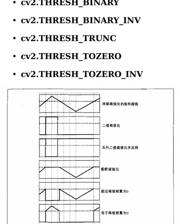
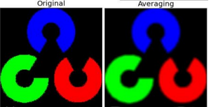

本节对OpenCV图像处理中：图像阀值、图像模糊、图像的形态学转换，进行整理介绍
图像阀值
- 简单阀值
- 自适应阀值
- Qtsu‘s二值化
简单阀值
针对于灰度图片的灰度值，当灰度值高于阀值时，给这个灰度值赋一个新值：1
2
3
4
5#第一个参数是原始图像
#第二个参数是阀值
#第三个参数是低于或高于阀值时被置于的新值
#第四个参数是阀值规则
retVal,thresh = cv2.threshold(img, 127, 255, cv2.THRESH_TOZERO)阀值规则对应如下：
自适应阀值
与上面简单阀值类似，不过简单阀值是整幅图像采用一个数作为阀值，这种方法并不是适应于所有情况，尤其是当一幅图像上的不同部分具有不同亮度时，可以同一幅图像的不同区域采用不同的阀值。1
2
3
4
5#第二个是超过或小于阀值被重置的灰度值
#第三个参数是指定阀值计算方法
#11是指邻域大小
#2是一个常数，阀值就等于平均值或者加权平均值减去这个常数
thresh = cv2.adaptiveThreshold(img, 255, cv2.ADAPTIVE_GAUSSIAN_C, cv2.THRESH_BINARY, 11, 2)Otsu‘s 二值化
在简单阀值时是随便给了一个数来做阀值，那么怎么知道选取的好坏呢？答案就是不停的尝试。如果是一幅双峰图像，就应该根据其直方图计算出一个阀值。1
ret2,th2 = cv2.threshold(img,0,255,cv2.THRESH_BINARY+cv2.THRESH_OTS)
图像平滑
- 学习使用不同的低通滤波器对图像进行模糊
- 使用自定义的滤波器对图像进行卷积（2D卷积）
2D卷积
与信号一样，可以对2D图像实施低通滤波(LPF)，高通滤波(HPF)等。LPF帮助去除噪声、模糊图像；HPF帮助找得到图像的边缘。1
2kernel = np.ones((5,5),np.float32)/25
dst = cv2.filter2D(img,-1,kernel)效果如下：
图像模糊
使用低通滤波器可以达到图像模糊的目的，这对去除噪音很有帮助，当然现在更多的是通过生成对抗网络来对图像进行增强等。OpenCV提供了四种模糊计算。平均
使用卷积框覆盖区域所有像素的平均值来替代中心元素1
2#使用归一化卷积框
blur = cv2.blur(img,(5,5))高斯模糊
一个卷积框里的值是符合高斯分布的，方框中心的值最大，其余根据距离中心元素的距离递减1
2#卷积核的大小必须是一个奇数
blur = cv2.GaussianBlur(img, (5,5), 标准差)中值模糊
用卷积框对应像素点的中值来替代中心像素的值，这个滤波器经常用来去除椒盐噪声。1
median = cv2.medianBlur(img, 5)
双边滤波
高斯滤波器是求中心点邻近区域像素的高斯加权平均值，这种只考虑像素之间的空间关系，而不会考虑像素值之间的关系（像素的相似度）。所以这种方法不会考虑一个像素是否位于边界，边界也会模糊掉。双边滤波同时使用空间高斯权重和灰度值相似性高斯权重。空间高斯函数确保只有邻近区域的像素对中心点有影响，灰度值相似性高斯函数确保只有与中心像素灰度值相近的才会被用来做模糊运算。所以这种方法会确保边界不会被模糊掉，因为边界处的灰度值变化比较大。
1
2#9表示邻域直径，两个75分别是空间高斯函数标准差、灰度值相似性高斯函数标准差
blur = cv2.bilateralFilter(img, 9, 75, 75)
形态学转换
- 腐蚀、膨胀、开运算、闭运算等
形态学操作是根据图像形状进行的简单操作。一般情况下对二值化图像进行的操作。需要输入两个参数，一个是原始图像，第二个被称为结构化元素或
核，它是用来决定操作的性质的。
1.腐蚀
1 | img = cv2.imread('j.png',0) |
1 | dilation = cv2.dilate(img,kernel,iterations = 1) |
1 | opening = cv2.morphologyEx(img, cv2.MORPH_OPEN, kernel) |
1 | closing = cv2.morphologyEx(img, cv2.MORPH_CLOSE, kernel) |
1 | gradient = cv2.morphologyEx(img, cv2.MORPH_GRADIENT, kernel) |